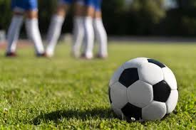
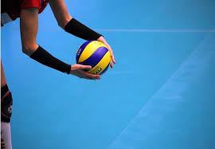
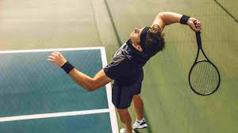
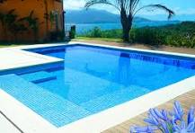
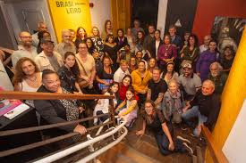
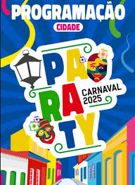
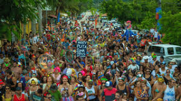

O Paraty Clube é um dos clubes mais tradicionais da cidade e possui uma estrutura focada em lazer e esportes, atendendo tanto moradores quanto visitantes.
Esportes
O Paraty Clube oferece várias modalidades esportivas,
sendo um local popular para os moradores da cidade e turistas que buscam se envolver com atividades esportivas durante sua estadia.
Alguns dos esportes praticados no clube incluem futebol de campo, tênis, natação, vôlei.



Espaço para Eventos
O Paraty Clube oferece uma estrutura versátil e aconchegante para a realização de eventos, sendo um local ideal para diferentes tipos de confraternizações, desde festas sociais até encontros empresariais. Eles oferecem um salão de festas, área externa, piscina.

Programação Cultural e Social
O Paraty Clube é conhecido por sua rica programação social e cultural,
que busca oferecer atividades diversificadas para seus associados e para a comunidade local.
A programação do clube vai além das modalidades esportivas e se estende a eventos que promovem a integração entre os membros,
bem como a valorização da cultura local e regional. Conta com bailes e festas sociais, eventos sociais, programação infantil,
eventos gastronômicos, eventos esportivos, workshops, entre outros.

Programação de Carnaval
O Carnaval de Paraty 2025 promete ser uma celebração vibrante, repleta de música,
cultura e tradições que encantam foliões de todas as idades. Entre os dias 28 de fevereiro e 4 de março de 2025,
a cidade histórica se transforma em um palco de festividades que atraem tanto moradores quanto turistas.
Programação Oficial
A programação oficial do Carnaval de Paraty 2025 inclui uma variedade de eventos distribuídos por diferentes locais da cidade,
como o Centro Histórico, a Praia do Jabaquara e a Praia do Pontal. As atividades contemplam blocos carnavalescos, cortejos, matinês e shows musicais,
garantindo diversão para todos os gostos.

